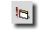
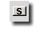
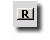
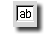
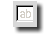
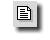
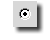
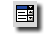

|  |
Form: A gomb megnyomásával az aktuális kurzorpozícióra a
<FORM ACTION="" METHOD="post"></FORM> elemeket illeszti be a
Globe és a kurzort a nyitó és záró elem közé helyezi. A dokumentumban az általad létrehozandó "ûrlapok" adattartalmát és funkcióit tudod vele meghatározni. A beillesztett minta egy általános form minta, amit igényeidnek megfelelõen bõvíteni, módosítani tudsz.
A paramétereket neked kell beállítani. Amennyiben be szeretnéd állítani a tulajdonságait úgy, menj vissza a HTML kezdõ elem > jele elé és nyomj egy szóköz billentyût. A Globe segíteni fog neked a paraméterezésben. Errõl a funkcióról bõvebben a Segédlet menüpont alatt olvashatsz.
|
|  |
Jóváhagyás: A gomb megnyomásával az aktuális kurzorpozícióra a
<INPUT TYPE="submit"> elemet illeszti be a
Globe. Ezzel a formhoz egy "adatelküldõ gombot" tudsz létrehozni, melynek megnyomásával a formba írt adatokkal végrehajtódik a form részére meghatározott mûvelet. Amennyiben további opciókat kívánsz megadni, úgy menj vissza a HTML kezdõ elem > jele
elé és nyomj egy szóköz billentyût. A Globe segíteni fog neked a paraméterezésben. Errõl a funkcióról bõvebben a Segédlet menüpont alatt olvashatsz.
|
|  |
Törlés: A gomb megnyomásával az aktuális kurzorpozícióra a
<INPUT TYPE="reset"> elemet illeszti be a
Globe. A formba bevitt adatokat törli és nem hajtódik végre az ahhoz rendelt mûvelet. Amennyiben további opciókat kívánsz megadni, úgy menj vissza a HTML kezdõ elem > jele
elé és nyomj egy szóköz billentyût. A Globe segíteni fog neked a paraméterezésben. Errõl a funkcióról bõvebben a Segédlet menüpont alatt olvashatsz.
|
|  |
Szövegmezõ: A gomb megnyomásával az aktuális kurzorpozícióra a
<INPUT TYPE="text" NAME=""> elemet illeszti be a
Globe. Segítségével nyílt adatbeviteli mezõt hozhatunk létre a HTML dokumentumban. Amennyiben további opciókat kívánsz megadni, úgy menj vissza a HTML kezdõ elem > jele
elé és nyomj egy szóköz billentyût. A Globe segíteni fog neked a paraméterezésben.
|
|  |
Rejtett beviteli mezõ: A gomb megnyomásával az aktuális kurzorpozícióra a
<INPUT TYPE="hidden" NAME="" VALUE=""> elemet illeszti be a
Globe. Segítségével maszkolt adatbeviteli mezõt hozhatunk létre a HTML dokumentumban. Az ilyen adatmezõbe írt adatok "*****" jelekkel kitakarásra kerülnek a képernyõn. Amennyiben további opciókat kívánsz megadni, úgy menj vissza a HTML kezdõ elem > jele
elé és nyomj egy szóköz billentyût. A Globe segíteni fog neked a paraméterezésben.
|
|  |
Szövegmezõ: A gomb megnyomásával az aktuális kurzorpozícióra a
<TEXTAREA NAME=""></TEXTAREA> elemeket illeszti be a
Globe és a kurzort a nyitó és záró elem közé helyezi. Segítségével lehet meghatározni a szöveges adatbeviteli mezõk tulajdonságát. Amennyiben további opciókat kívánsz megadni, úgy menj vissza a HTML kezdõ elem > jele
elé és nyomj egy szóköz billentyût. A Globe segíteni fog neked a paraméterezésben.
|
|  |
Választó gomb: A gomb megnyomásával az aktuális kurzorpozícióra a
<INPUT TYPE="radio" NAME=""> elemet illeszti be a
Globe. Ezt az adatbeviteli lehetõséget "Rádió gombnak" is nevezik. Formokban használt kötött választási lehetõségeknél történõ adatbevitelhez és a végrehajtáshoz történõ továbbításhoz. Amennyiben be szeretnéd állítani a tulajdonságait úgy, menj
vissza a HTML kezdõ elem > jele elé és nyomj egy szóköz billentyût. A Globe segíteni fog neked a paraméterezésben. Errõl a funkcióról bõvebben a Segédlet menüpont alatt olvashatsz.
|
![[ CHECKBOX ]](pic/checkbox_button.gif) |
Választó gomb: A gomb megnyomásával az aktuális kurzorpozícióra a
<INPUT TYPE="checkbox" NAME=""> elemet illeszti be a
Globe. Ezt az adatbeviteli lehetõséget "Csekk gombnak" is nevezik. Formokban használt kötött választási lehetõségeknél történõ adatbevitelhez és a végrehajtáshoz történõ továbbításhoz. Amennyiben be szeretnéd állítani a tulajdonságait úgy, menj
vissza a HTML kezdõ elem > jele elé és nyomj egy szóköz billentyût. A Globe segíteni fog neked a paraméterezésben. Errõl a funkcióról bõvebben a Segédlet menüpont alatt olvashatsz.
|
|  |
Választás: A gomb megnyomásával az aktuális kurzorpozícióra a
<SELECT NAME=""></SELECT>> elemeket illeszti be a
Globe és a kurzort a nyitó és záró elem közé helyezi. Segítségével úgynevezett "legördülõ menüt" lehet létrehozni és ebbõl lehet választást eszközölni. Amennyiben be szeretnéd állítani a tulajdonságait úgy, menj
vissza a HTML kezdõ elem > jele elé és nyomj egy szóköz billentyût. A Globe segíteni fog neked a paraméterezésben. Errõl a funkcióról bõvebben a Segédlet menüpont alatt olvashatsz.
|
![[ Globe Webeditor ]](pic/menu_top.jpg)
![[ Ismertetõ ]](pic/menu_hu_01.jpg)
![[ Segédlet ]](pic/menu_hu_02.jpg)
![[ Elõzmény ]](pic/menu_hu_03.jpg)
![[ Letöltés ]](pic/menu_hu_04.jpg)
![[ Képek ]](pic/menu_hu_05.jpg)
![[ Fórum ]](pic/menu_hu_06.jpg)
![[ Kapcsolat ]](pic/menu_hu_07.jpg)
![[ Bottom ]](pic/menu_bottom.jpg)
![[ Globe Webeditor Ismertetõ ]](pic/top_hu_01.jpg)
![[ Kiegészítõ ikonmenü ]](pic/forms_menu_hu.gif)